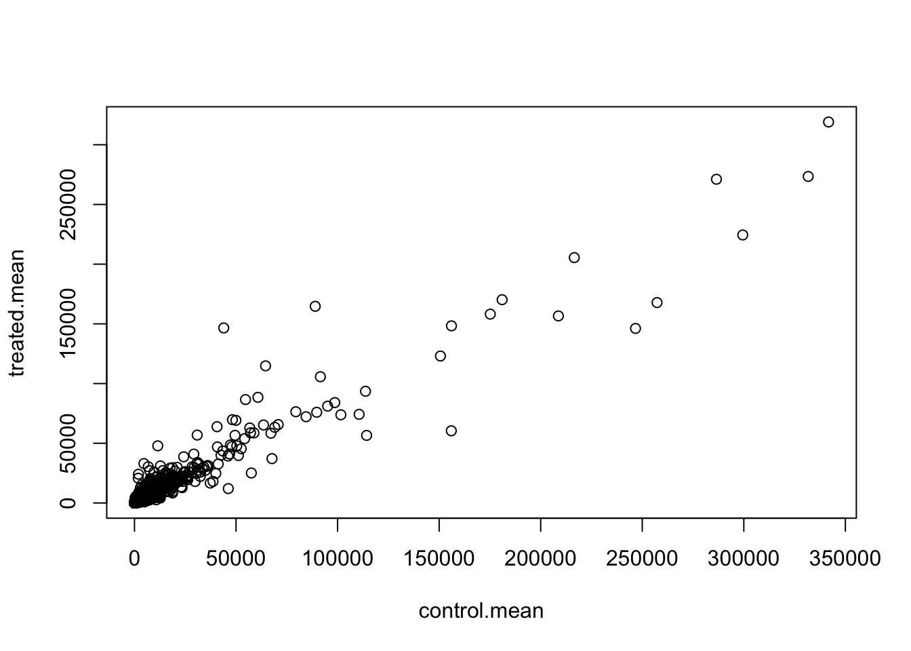

The data for this hands-on session comes from a published RNA-seq experiment where airway smooth muscle cells (ASMs) were treated with dexamethasone (dex), a synthetic glucocorticoid steroid with anti-inflammatory effects (Himes et al. 2014).
Welcome to Bioconductor
Vignettes contain introductory material; view with
'browseVignettes()'. To cite Bioconductor, see
'citation("Biobase")', and for packages 'citation("pkgname")'.
Attaching package: 'Biobase'
The following object is masked from 'package:MatrixGenerics':
rowMedians
The following objects are masked from 'package:matrixStats':
anyMissing, rowMedians
Q3. How would you make the above code in either approach more robust? Is there a function that could help here?
Using rowMeans() is better than using something like rowSums()/4 because then you’re not hard ocdin how many rows there are incase there are more rows in a different data set.
Q4. Follow the same procedure for the treated samples (i.e. calculate the mean per gene across drug treated samples and assign to a labeled vector called treated.mean)
Done, see above.
Q5 (a). Create a scatter plot showing the mean of the treated samples against the mean of the control samples.
plot(meancounts)

Q5(b) and Q6. You could also use the ggplot2 package to make this figure producing the plot below. Try plotting both axes on a log scale.
Q7. What is the purpose of the arr.ind argument in the which() function call above? Why would we then take the first column of the output and need to call the unique() function?
The arr.ind argument makes which() to give us the table info for the genes that it is TRUE for. The unique() would makes sure that we don’t call anything twice.
Now, the NaN is returned when you divide by zero and try to take the log. The -Inf is returned when you try to take the log of zero. It turns out that there are a lot of genes with zero expression. Let’s filter our data to remove these genes.
res$symbol <-mapIds(org.Hs.eg.db,keys=row.names(res), # Our gene nameskeytype="ENSEMBL", # The format of our gene namescolumn="SYMBOL", # The new format we want to addmultiVals="first")
'select()' returned 1:many mapping between keys and columns
head(res)
log2 fold change (MLE): dex treated vs control
Wald test p-value: dex treated vs control
DataFrame with 6 rows and 7 columns
baseMean log2FoldChange lfcSE stat pvalue
<numeric> <numeric> <numeric> <numeric> <numeric>
ENSG00000000003 747.194195 -0.350703 0.168242 -2.084514 0.0371134
ENSG00000000005 0.000000 NA NA NA NA
ENSG00000000419 520.134160 0.206107 0.101042 2.039828 0.0413675
ENSG00000000457 322.664844 0.024527 0.145134 0.168996 0.8658000
ENSG00000000460 87.682625 -0.147143 0.256995 -0.572550 0.5669497
ENSG00000000938 0.319167 -1.732289 3.493601 -0.495846 0.6200029
padj symbol
<numeric> <character>
ENSG00000000003 0.163017 TSPAN6
ENSG00000000005 NA TNMD
ENSG00000000419 0.175937 DPM1
ENSG00000000457 0.961682 SCYL3
ENSG00000000460 0.815805 FIRRM
ENSG00000000938 NA FGR
Q11. Run the mapIds() function two more times to add the Entrez ID and UniProt accession and GENENAME as new columns called res\(entrez, res\)uniprot and res$genename